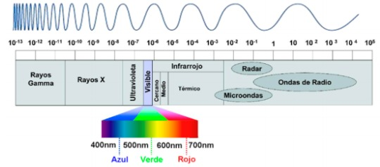
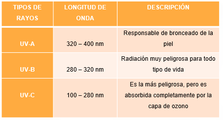

Análisis comparativo del modelo TUV en sus versiones 4.4 y 5.3.1 para obtener el indice de radiación ultravioleta con datos obtenidos del Ideam para la ciudad de Bogotá
Análisis comparativo del Modelo de radiación troposférica, ultravioleta y visible TUV en sus versiones 4.4 (2002) y 5.3.1 (2017), agregando la nueva variable de nubosidad y adaptando la variable ozono con valores generados en tiempo real del modelo GFS (Global Forecasting System, desarrollado por el National Centers for Environmental Prediction –NCEP- de la NOAA), encargado de la obtención de la cantidad de ozono en la columna atmosférica. Por otro lado, la variable de nubosidad es obtenida de los informes meteorológicos aeronáuticos de rutina (METARES) tomados en la estación del Aeropuerto el Dorado con el fin de obtener un índice de radiación ultravioleta con una mayor precisión contemplando cielos despejados y también en condiciones de nubosidad.
La radiación solar es aquella emitida por el sol hacia la superficie terrestre y tiene la capacidad de propagarse hacia todas las direcciones mediante ondas electromagnéticas a través del espacio en diferentes frecuencias como (infrarroja, visible y ultravioleta). La energía proveniente del sol es radiación electromagnética que se genera por las reacciones del hidrógeno en el núcleo del sol y es el principal factor determinante en el clima y los procesos atmosféricos. Esta energía es emitida en forma de radiación de onda corta ya que es sometida al paso por la atmósfera lo que hace que se debilite por la difusión, nubes y por la absorción de moléculas de gases como el ozono y el vapor de agua.
La radiación electromagnética se puede ordenar en un espectro en diferentes
longitudes de onda, como se muestra en la anterior imagen, que se extiende desde longitudes de onda
corta de billonésimas de metro (frecuencias muy altas), como los rayos gama, hasta longitudes de onda
larga de muchos kilómetros (frecuencias muy bajas) como las ondas de radio. a menor longitud de onda
mayor contenido energético.
La luz visible que abarca la región entre 400 nm y 700 nm y hace referencia la radiación que puede ser detectada por el ojo humano y tiene los colores violetas, azul, verde, amarillo, naranja y rojo. La radiación con las longitudes de onda más corta que el color violeta, es denominada radiación ultravioleta y está entre los 100 nm y 400 nm. Finalmente se encuentra la región del infrarrojo que se está entre los 700 nm y 4000 nm, el total de la energía queda entonces distribuida, en un 7% al ultravioleta, 47,3% al visible y 45,7% al infrarrojo.
El sol además de emitir luz visible, emite un tipo de radiación invisible de longitud de onda más corta que el color azul y el violeta, por lo cual recibió el nombre de ultravioleta que equivale a un 7% del total de energía emitida por el sol, se divide en las siguientes categorías:
El índice ultravioleta (IUV) es una medida establecida que indica la intensidad de radiación ultravioleta UV-B que alcanza la superficie terrestre, que puede ocasionar posibles lesiones en la piel. Éste índice, que establece unos rangos en una escala de 0 a 11+ permite comunicar a las personas, los riesgos de afectación según el tipo de piel convirtiéndose en una medida orientada a promover conductas adecuadas a una exposición al sol de manera responsable y saludable. Fue desarrollado a través de esfuerzos realizados entre la OMS en colaboración con el Programa de las Naciones Unidas para el Medio Ambiente (PNUMA), la Organización Meteorología Mundial (OMM), la Comisión Internacional para la Protección de Radiación No-Ionizante (ICNIRP) y la Oficina Federal Alemana para Protección de la Radiación.
Datos obtenidos del modelo GFS (Sistema de pronóstico global) de mediciones satelitales del Instrumento de Monitoreo de Ozono (Ozone Monitoring Instrument – OMI) portado en el satélite AURA, el cual fue lanzado en el año 2004 y actualmente se encuentra en funcionamiento.
| Día | Mes | Año | Ozono total |
|---|---|---|---|
| 15 | Dec | 15 | 248.9 |
| 16 | Dec | 15 | 248.8 |
| 17 | Dec | 15 | 241.8 |
| 18 | Dec | 15 | 240.2 |
| 19 | Dec | 15 | 242.8 |
| 20 | Dec | 15 | 242.3 |
| 21 | Dec | 15 | 0 |
| 22 | Dec | 15 | 238.1 |
| 23 | Dec | 15 | 238.3 |
| 24 | Dec | 15 | 235.1 |
| 25 | Dec | 15 | 232.9 |
| 26 | Dec | 15 | 232.8 |
| 27 | Dec | 15 | 236.5 |
| 28 | Dec | 15 | 0 |
| 29 | Dec | 15 | 238.9 |
| 30 | Dec | 15 | 0 |
| 31 | Dec | 15 | 239 |
Los datos de la nubosidad son obtenidos de los informes meteorológicos aeronáuticos de rutina de los archivos físicos del IDEAM denominados METARES de la Estación Meteorológica del Aeropuerto el Dorado. El Metar es un estándar que se encarga de proporcionar las observaciones de las condiciones atmosféricas de los aeropuertos y sus alrededores. Estas observaciones son tomadas rutinariamente por un meteorólogo, normalmente cada hora durante las 24 horas del día o durante las horas que se encuentre operativo el aeropuerto. Se realiza un procesamiento a los datos promediando los valores de Nubosidad del rango horario 6:00 am a las 18:00 pm para obtener el valor promedio del la Nubosidad del día.
| Fecha | Hora de registro | Nub Total | ||||||||||||
|---|---|---|---|---|---|---|---|---|---|---|---|---|---|---|
| 6:00 | 7:00 | 8:00 | 9:00 | 10:00 | 11:00 | 12:00 | 13:00 | 14:00 | 15:00 | 16:00 | 17:00 | 18:00 | ||
| 15/12/2015 | 6 | 8 | 8 | 8 | 8 | 11 | 7 | 7 | 7 | 7 | 7 | 8 | 8 | 7 |
| 16/12/2015 | 7 | 7 | 7 | 7 | 7 | 5 | 7 | 8 | 8 | 7 | 6 | 6 | 6 | 7 |
| 17/12/2015 | 6 | 7 | 6 | 6 | 6 | 7 | 7 | 7 | 7 | 7 | 6 | 7 | 7 | 7 |
| 18/12/2015 | 7 | 7 | 4 | 5 | 8 | 8 | 8 | 8 | 8 | 7 | 7 | 7 | 7 | 7 |
| 19/12/2015 | 7 | 8 | 7 | 7 | 7 | 7 | 7 | 7 | 6 | 7 | 7 | 5 | 4 | 7 |
| 20/12/2015 | 7 | 7 | 6 | 7 | 7 | 7 | 7 | 5 | 5 | 6 | 6 | 5 | 7 | 6 |
| 21/12/2015 | 2 | 2 | 2 | 2 | 3 | 2 | 2 | 2 | 4 | 5 | 5 | 6 | 4 | 3 |
| 22/12/2015 | 6 | 5 | 4 | 4 | 4 | 4 | 6 | 6 | 5 | 4 | 5 | 5 | 6 | 5 |
| 23/12/2015 | 7 | 6 | 6 | 5 | 4 | 4 | 5 | 5 | 5 | 5 | 5 | 4 | 5 | 5 |
| 24/12/2015 | 4 | 1 | 1 | 1 | 2 | 2 | 3 | 4 | 6 | 7 | 7 | 6 | 6 | 4 |
| 25/12/2015 | 2 | 2 | 3 | 3 | 4 | 4 | 3 | 4 | 7 | 6 | 4 | 4 | 5 | 4 |
| 26/12/2015 | 7 | 4 | 3 | 2 | 2 | 2 | 2 | 2 | 2 | 3 | 5 | 6 | 5 | 3 |
| 27/12/2015 | 2 | 3 | 3 | 3 | 3 | 3 | 4 | 3 | 3 | 4 | 4 | 4 | 3 | 3 |
| 28/12/2015 | 7 | 6 | 6 | 6 | 6 | 6 | 6 | 5 | 4 | 3 | 4 | 4 | 4 | 5 |
| 29/12/2015 | 6 | 4 | 3 | 2 | 2 | 3 | 6 | 6 | 6 | 6 | 5 | 6 | 5 | |
| 30/12/2015 | 2 | 5 | 5 | 5 | 5 | 5 | 4 | 4 | 4 | 4 | 4 | 4 | 4 | 4 |
| 31/12/2015 | 4 | 6 | 5 | 6 | 6 | 6 | 6 | 6 | 7 | 7 | 5 | 3 | 4 | 5 |
Para comprobar que los resultados arrojados por el modelo son similares a los datos presentados, se realiza la obtención de las mediciones de la radiación ultravioleta hechas por el Espectrorradiómetro Biospherical GUV-2511 ubicado en la Fundación Universitaria Los Libertadores.
| Fecha | Indice Uv |
|---|---|
| 15/12/2015 | 13.13 |
| 16/12/2015 | 13.13 |
| 17/12/2015 | 13.59 |
| 18/12/2015 | 13.69 |
| 19/12/2015 | 13.55 |
| 20/12/2015 | 13.55 |
| 21/12/2015 | |
| 22/12/2015 | 13.85 |
| 23/12/2015 | 13.84 |
| 24/12/2015 | 14.08 |
| 25/12/2015 | 14.25 |
| 26/12/2015 | 14.27 |
| 27/12/2015 | 14.02 |
| 28/12/2015 | |
| 29/12/2015 | 13.88 |
| 30/12/2015 | |
| 31/12/2015 | 13.92 |
| Fecha | Indice Uv |
|---|---|
| 15/12/2015 | 12.33 |
| 16/12/2015 | 12.32 |
| 17/12/2015 | 12.76 |
| 18/12/2015 | 12.87 |
| 19/12/2015 | 12.73 |
| 20/12/2015 | 12.82 |
| 21/12/2015 | |
| 22/12/2015 | 13.20 |
| 23/12/2015 | 13.19 |
| 24/12/2015 | 13.52 |
| 25/12/2015 | 13.70 |
| 26/12/2015 | 13.81 |
| 27/12/2015 | 13.56 |
| 28/12/2015 | |
| 29/12/2015 | 13.23 |
| 30/12/2015 | |
| 31/12/2015 | 13.26 |
| Fecha | Uv con 4.4 | Uv con 5.3.1 | Uv medido |
|---|---|---|---|
| 15/12/2015 | 13.13 | 12.33 | 9.36 |
| 17/12/2015 | 13.59 | 12.76 | 10.59 |
| 22/12/2015 | 13.85 | 13.20 | 11.27 |
| 23/12/2015 | 13.84 | 13.19 | 11.28 |
| 25/12/2015 | 14.25 | 13.70 | 11.89 |
| 26/12/2015 | 14.27 | 13.81 | 12.24 |
| 29/12/2015 | 13.88 | 13.23 | 11.23 |
| 31/12/2015 | 13.92 | 13.26 | 12.26 |
En la anterior gráfica se pueden denotar las diferencias existentes entre los dos modelos, donde de manera puntual se ve que las mediciones hechas por el modelo TUV en la versión 5.3.1 mostró una disminución marcada de los niveles de radiación ultravioleta frente a la 4.4, pues la implementación de la variable Taucld (Nubosidad) fue uno de los factores preponderantes a la hora de mostrar resultados, ya que la nubosidad es uno de los principales actores que filtran y por ende disminuyen la radiación incidente sobre la tierra. Además, se presenta un comportamiento similar a la radiación real medida por el Espectrorradiómetro de los Libertadores.